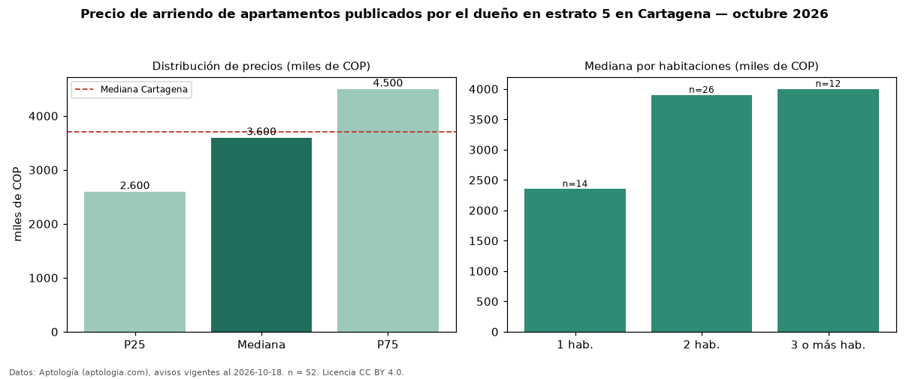

Precio de arriendo de apartamentos publicados por el dueño en estrato 5 en Cartagena — octubre 2026
COP 3,60 millones al mes es el canon mediano de apartamentos publicados por el dueño en estrato 5 en arriendo en Cartagena (n = 52 avisos). Eso es 10 % menos que la mediana de los apartamentos en estrato 5 en arriendo de Cartagena (COP 4,00 millones, n = 801); este segmento reúne el 6 % de esos avisos. Por metro cuadrado, la mediana es COP 44.545/m² al mes (n = 50), 0 % por encima de los apartamentos en estrato 5 en arriendo de Cartagena (COP 44.374/m²). El área mediana anunciada es 82 m². El segmento con más oferta es el de 2 habitaciones (26 avisos, mediana COP 3,90 millones); pasar de 1 habitación a 3 o más habitaciones cambia la mediana +70 %. La administración mediana declarada es COP 600.000 al mes (n = 17), aparte del canon. La mitad central de los avisos va de COP 2,60 millones a COP 4,50 millones (razón 1,7), una dispersión moderada. La mediana de todos los apartamentos en arriendo de Cartagena es COP 3,70 millones (−3 % de diferencia). Datos: Aptología (aptologia.com), CC BY 4.0 — https://www.aptologia.com/arriendo/cartagena. Archivos: PDF, CSV con las cifras y gráfica PNG.

| Avisos únicos | 52 |
|---|---|
| Percentil 25 | COP 2.600.000 |
| Mediana | COP 3.600.000 |
| Percentil 75 | COP 4.500.000 |
| Mediana por m² | COP 44.545 |
Fuente: avisos vigentes de portales inmobiliarios recopilados por Aptología, deduplicados (mínimo 30 avisos únicos por celda). Precios pedidos, no cerrados. Fecha: 2026-10-18.